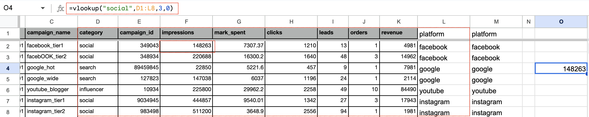

Part 2 – Lookup & Reference Techniques
Data retrieval techniques using INDEX+MATCH, VLOOKUP, and INDIRECT.
Continuing from the previous post, this article aims to retrieve:
- The category corresponding to each platform
- The platform and category for each campaign
We'll use the following functions:
INDEX + MATCHVLOOKUPINDIRECT
INDEX + MATCH
INDEX with MATCH is a powerful combo. While it may seem complex at first, but it's really flexible once you get the hang of it.
The first argument of INDEX is the column from which you want to retrieve data — in this case, the category column (column D) of the raw data. The second argument is the row number. In this example we put 2 and get the value in cell D2, which is "social". Since this row number will be dynamic, we use MATCH to find it.
MATCH needs three arguments:
- Lookup value: e.g., values in column A of the
platformsheet (facebook, google, youtube, etc.) - Lookup range: where to search for the value — in this case, column L of the
rawsheet (platform) - Match type: usually 0, which means exact match
For example, to find the value of A3 in the platform sheet (which is "facebook"), MATCH searches column L of the raw data and returns the row number of its first appearance, which is 2. This value is then used as the row number in the INDEX function.
So in platform sheet cell B3, our formula looks like this:
There are two other functions related to referencing values by position: VLOOKUP and INDIRECT. VLOOKUP is more commonly used in practice than INDIRECT. These two are not the best fits for this specific case, though.
The lookup exercises below are mainly for practice, as there’s no strict one-to-one relationship between platform and category. A single platform might appear under both "social" and "influencer". In such cases, the first match is returned.
VLOOKUP
VLOOKUP searches for a value in the first column of a data range and returns a value from a specified column in the same row.
It takes three required arguments:
- Lookup value
- Table range
- Column number (to return from)
It also has an optional fourth argument for match type: exact (0) or approximate (1), with 1 being the default.
For example, in a blank cell of the raw sheet, set:
=VLOOKUP("social", D1:L8, 2, 0)This searches column D of the range D1:L8 for the first occurrence of "social" and returns the value from the second column of that row — impressions from row 2 in this case.
If the lookup value isn’t in the first column of the range, rearrange the data before using VLOOKUP.
Although the fourth argument is optional, it’s more precise to exact math. The default in both Excel and Google Sheets is approximate, which can cause unexpected results.
More on official docs:
INDIRECT
INDIRECT takes one required argument — a string representing a cell reference, like "D2" or "Sheet1!A2".
It's often used when consolidating data from multiple sheets into one summary. For example, if data for each month is stored in separate sheets (January, February, etc.), and you want to grab them all in a summary sheet, INDIRECT would be very handy.
There’s already a great article describing use cases: SUMIF combined with INDIRECT (by Zanzan).